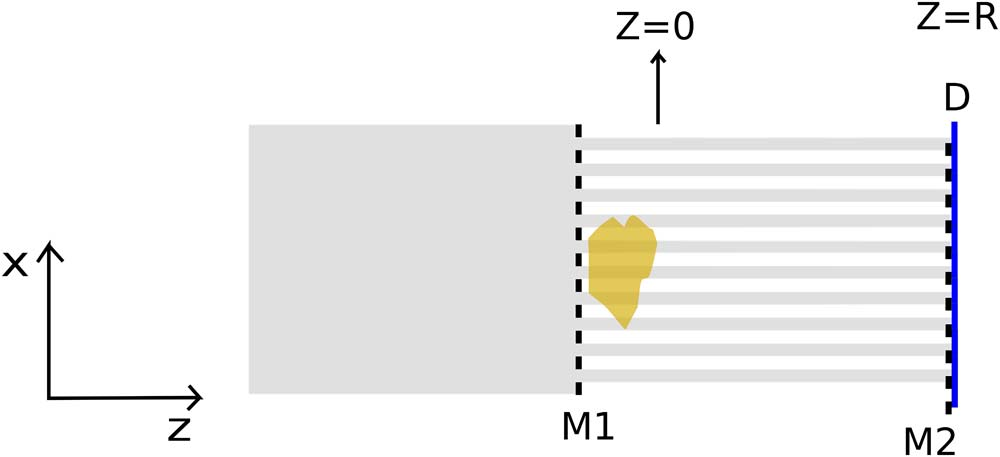
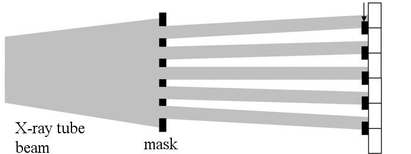
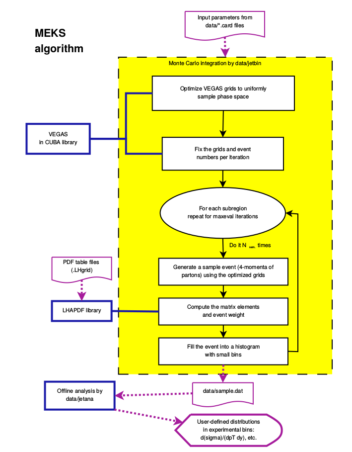

-
- Basic info. 基本信息
- Personal: Zhihua Liang / Male
- Education: PhD of Physics from SMU
- Work Experience: Postdoc at UH
- Website: www.eksmu.com
- GitHub: www.github.com/magicknight
-
- Experience. 项目与工作经验
CEO&CTO, DAXIV media technology Co, LTD.（2015.9 - Present）
-
Daxiv.com, Full Stack website
In progress
Postdoctoral Fellow at University of Houston（2013.8 - 2015.9）
-
Effect of Reconstruction Method on Optimal Acquisition Parameters for Lesion Detection-Localization in Digital Breast Tomosynthesis Publication
Our assessment methodology involves realistic computer simulations with digital breast phantoms and both human and model-observer LROC studies.
The latter have been carried out with a visual-search (VS) model that uses gradient-template matching to guide an initial holistic search.
This VS observer is intended as a human-observer model. Observer results from 2D test images reconstructed with Feldkamp FBP and iterative, maximum-likelihood methods have been obtained.
-
Towards using eye tracking data to develop visual search for breast imaging Publication
The purpose of this work was to examine some characteristics of human gaze on breast images with the goal of informing the design of our VS observers.
Using a helmet-mounted eye- tracking system, we recording the movement of gaze from human observers as they searched for masses in sets of 2D digital breast tomosynthesis (DBT) images.
For this initial investigation, we computed correlation coefficients between the fixation times and the feature values.
-
Approximated transport-of-intensity equation for coded-aperture x-ray phase-contrast imaging Publication
In this Letter, we present for the first time to our knowledge a simplified form of TIE that models x-ray differential phase-contrast (DPC) imaging with coded-aperture (CA) geometry.
The relative contributions of absorption, phase, and differential phase to the acquired phase-sensitive intensity images are made readily apparent with the approximate TIE,
which may prove useful for solving the inverse phase-retrieval problem associated with these CA geometry based DPC.
 -
Spectral x-ray phase contrast imaging for single-shot retrieval of absorption, phase, and differential-phase imagery Publication
We propose the first single-shot, noninterferometric x-ray imaging method for simultaneous retrieval of absorption, phase, and differential-phase imagery with quantitative accuracy.
This method can utilize an incoherent and polychromatic (clinical or laboratory) x-ray tube and can enable retrieval for a wide range and composition of material properties.
The proposed method has been validated via computer simulations and is expected to significantly benefit applications that are sensitive to complexity of measurement, radiation dose and imaging time.

Research Assistant at SMU（2010.8 - 2012.12）
-
MEKS: a program for computation of inclusive jet cross sections at hadron colliders Publication
MEKS 1.0 is an upgraded EKS program with increased numerical precision, suitable for comparisons to the latest experimental data from the Large Hadron Collider and Tevatron.
Results of a benchmark comparison of the MEKS program and the commonly used FastNLO program are documented.

Other Projects
-
EKSMU Source Code
EKSMU is a EKS program that featured with GPU computation, and is re-written with C++.
-
- Skills. 技能清单
Machine Learning
Web Frontend